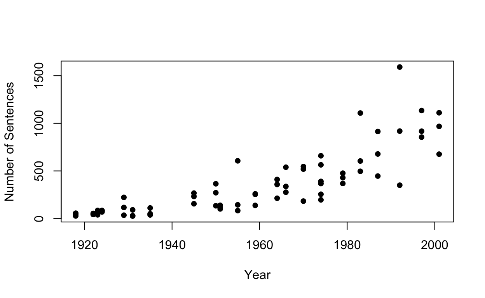
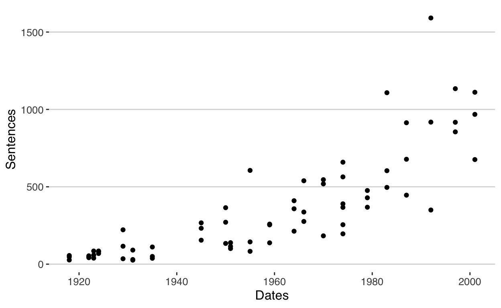
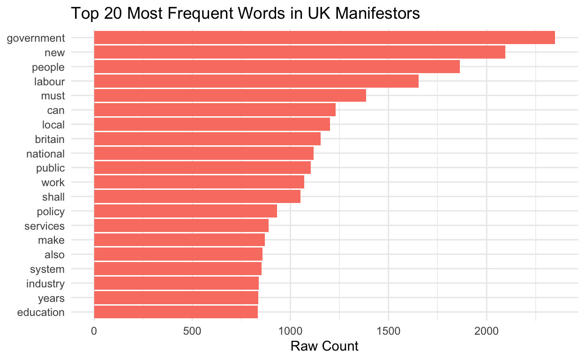
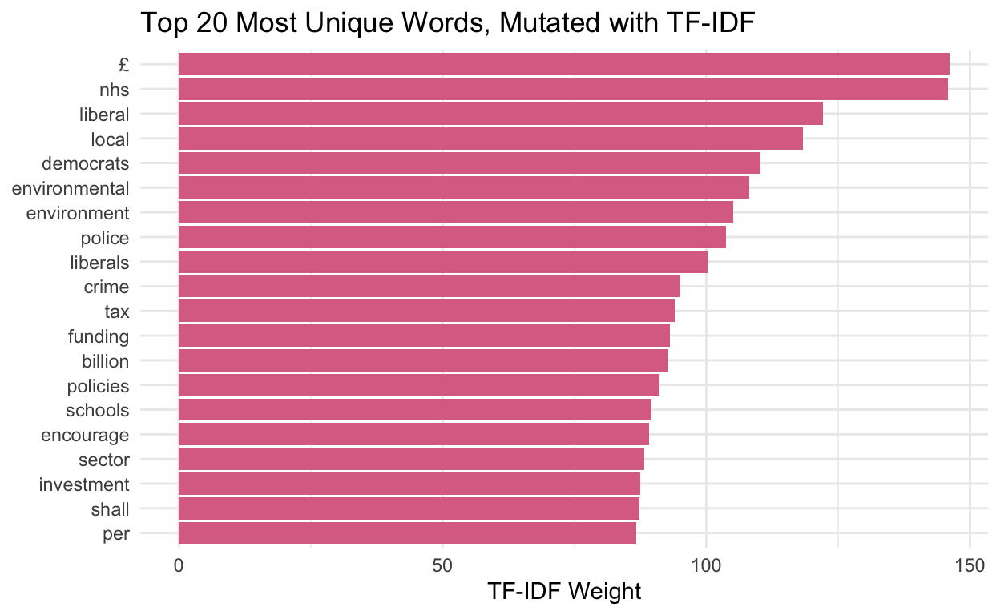

By: Akmal G on March 26th, 2026
In this project, I looked at the use of diction and the frequency of certain words, in order to deduce speech patterns of UK politicians, using evidence from a corpus of manifestos.
I first load the following packages; quanteda, readtext, ggplot2, ggthemes and tidyverse.
The argument docvarsfrom= allows us to use the file names as document ids; ‘> corpusSource object containing 69 texts of manifestos and 1 docvar’. We then need to turn the text files into a ‘corpus’, just to make sure the docnames are as expected (is being corrected in rebuild). Using ntoken and ntype, we can give names to the documents in question.
readtext object consisting of 69 documents and 1 docvar.
# A data frame: 69 × 3
doc_id text docvar1
<chr> <chr> <chr>
1 Con1918.txt "\"1918 Conse\"..." Con1918
2 Con1922.txt "\"1922 Conse\"..." Con1922
3 Con1923.txt "\"1923 Conse\"..." Con1923
4 Con1924.txt "\"1924 Conse\"..." Con1924
5 Con1929.txt "\"1929 Conse\"..." Con1929
6 Con1931.txt "\"1931 Conse\"..." Con1931
# ℹ 63 more rows [1] "Con1918.txt" "Con1922.txt" "Con1923.txt" "Con1924.txt"
[5] "Con1929.txt" "Con1931.txt" "Con1935.txt" "Con1945.txt"
[9] "Con1950.txt" "Con1951.txt" "Con1955.txt" "Con1959.txt"
[13] "Con1964.txt" "Con1966.txt" "Con1970.txt" "Con1974a.txt"
[17] "Con1974b.txt" "Con1979.txt" "Con1983.txt" "Con1987.txt"
[21] "Con1992.txt" "Con1997.txt" "Con2001.txt" "Lab1918.txt"
[25] "Lab1922.txt" "Lab1923.txt" "Lab1924.txt" "Lab1929.txt"
[29] "Lab1931.txt" "Lab1935.txt" "Lab1945.txt" "Lab1950.txt"
[33] "Lab1951.txt" "Lab1955.txt" "Lab1959.txt" "Lab1964.txt"
[37] "Lab1966.txt" "Lab1970.txt" "Lab1974a.txt" "Lab1974b.txt"
[41] "Lab1979.txt" "Lab1983.txt" "Lab1987.txt" "Lab1992.txt"
[45] "Lab1997.txt" "Lab2001.txt" "Lib1918.txt" "Lib1922.txt"
[49] "Lib1923.txt" "Lib1924.txt" "Lib1929.txt" "Lib1931.txt"
[53] "Lib1935.txt" "Lib1945.txt" "Lib1950.txt" "Lib1951.txt"
[57] "Lib1955.txt" "Lib1959.txt" "Lib1964.txt" "Lib1966.txt"
[61] "Lib1970.txt" "Lib1974a.txt" "Lib1974b.txt" "Lib1979.txt"
[65] "Lib1983.txt" "Lib1987.txt" "Lib1992.txt" "Lib1997.txt"
[69] "Lib2001.txt" ntk <- ntoken(manifestos_corpus) # shows the tokens per document
ntps <- ntype(manifestos_corpus) # shows the types per document
# There are 562339 tokens per document and 121676 types per document.
sum(ntk)[1] 562339sum(ntps)[1] 121676There is a difference between types and tokens.To summarize the corpus, for example, we may want to consider whether UK party manifestos getting longer or shorter over time. We can look at the number of sentences for each manifesto. I grabbed the dates of the manifestos, which could be done with docvars()<, but could also be done with regex.
num_sentences <- nsentence(manifestos_corpus)
num_sentences Con1918.txt Con1922.txt Con1923.txt Con1924.txt Con1929.txt
56 42 59 85 222
Con1931.txt Con1935.txt Con1945.txt Con1950.txt Con1951.txt
30 111 267 365 139
Con1955.txt Con1959.txt Con1964.txt Con1966.txt Con1970.txt
606 259 410 276 546
Con1974a.txt Con1974b.txt Con1979.txt Con1983.txt Con1987.txt
564 659 429 604 914
Con1992.txt Con1997.txt Con2001.txt Lab1918.txt Lab1922.txt
1591 1134 676 47 54
Lab1923.txt Lab1924.txt Lab1929.txt Lab1931.txt Lab1935.txt
39 69 116 91 38
Lab1945.txt Lab1950.txt Lab1951.txt Lab1955.txt Lab1959.txt
232 271 115 144 254
Lab1964.txt Lab1966.txt Lab1970.txt Lab1974a.txt Lab1974b.txt
358 539 519 196 367
Lab1979.txt Lab1983.txt Lab1987.txt Lab1992.txt Lab1997.txt
476 1108 446 350 917
Lab2001.txt Lib1918.txt Lib1922.txt Lib1923.txt Lib1924.txt
968 27 48 85 80
Lib1929.txt Lib1931.txt Lib1935.txt Lib1945.txt Lib1950.txt
35 26 50 155 134
Lib1951.txt Lib1955.txt Lib1959.txt Lib1964.txt Lib1966.txt
101 83 138 213 337
Lib1970.txt Lib1974a.txt Lib1974b.txt Lib1979.txt Lib1983.txt
183 390 255 368 496
Lib1987.txt Lib1992.txt Lib1997.txt Lib2001.txt
678 918 855 1111 sum(num_sentences)[1] 24524[1] "Con1918.txt" "Con1922.txt" "Con1923.txt" "Con1924.txt"
[5] "Con1929.txt" "Con1931.txt"# The following code extracts the digits (in form of dates) from the document names
Dates <- as.numeric(gsub('[^[:digit:]]','', nms))
head(Dates)[1] 1918 1922 1923 1924 1929 1931We notice from sum(num_sentences) that there 24524 words to look through.Then we plot them either in base scatterplot as well as a nicer ggplot.
plot(Dates, num_sentences, pch=16, ylab = "Number of Sentences", xlab = "Year")
info_summary <- data.frame(Dates = Dates, Sentences = num_sentences)
head(info_summary) Dates Sentences
Con1918.txt 1918 56
Con1922.txt 1922 42
Con1923.txt 1923 59
Con1924.txt 1924 85
Con1929.txt 1929 222
Con1931.txt 1931 30info_summary[69,] Dates Sentences
Lib2001.txt 2001 1111ggplot(data=info_summary, aes(x=Dates, y=Sentences, group=1)) + geom_point() +
theme_hc()
To see this, lets grab the Labor 1983 manifesto alone, then we transform them into tokens. Simply using the length function counts the number of tokens to around 25000; using the unique funtion counts the number of unique tokens to around 3600
Lab_1983 <- corpus_subset(manifestos_corpus, docvar1=="Lab1983")
summary(Lab_1983)Corpus consisting of 1 document, showing 1 document:
Text Types Tokens Sentences docvar1
Lab1983.txt 3673 25131 1108 Lab1983Tokens consisting of 1 document and 1 docvar.
Lab1983.txt :
[1] "Foreward" "Here" "you" "can" "read" "Labour's"
[7] "plan" "to" "do" "the" "things" "crying"
[ ... and 25,119 more ]length(tokens_all[[1]]) #~25k[1] 25131[1] 3673For grater clarity, we could remove punctuation and some numbers. Note that your research question should drive this choice and length of your documents might play a role.
More Information: DennySpirling
# Check and remove punctuation tokens; then place it in an object.
tokens_nopunc <- tokens(Lab_1983, remove_punct=T)
length(tokens_nopunc[[1]]) #~22.5k[1] 22513# Check and remove punctuation tokens as well as numbers.
tokens_nopunc_nonum <- tokens(Lab_1983, remove_punct=T, remove_number=T)
length(tokens_nopunc_nonum[[1]]) #~22.4k[1] 22396It would help us to separated bi-grams (only) from a set of uni-grams and bi-grams. While tokens_ngrams() generates n-grams or skip-grams in all possible combinations of tokens, tokens_compound() generates n-grams more selectively. Bi-grams can be negated using phrase() and a wild card (*).
toks_ngram <- tokens_ngrams(tokens_nopunc_nonum, n = 2)
head(toks_ngram[[1]], 20) [1] "Foreward_Here" "Here_you" "you_can" "can_read"
[5] "read_Labour's" "Labour's_plan" "plan_to" "to_do"
[9] "do_the" "the_things" "things_crying" "crying_out"
[13] "out_to" "to_be" "be_done" "done_in"
[17] "in_our" "our_country" "country_today" "today_To" # Reveal the top part of the list of bi-grams.
toks_neg_bigram <- tokens_compound(tokens_nopunc_nonum, pattern = phrase("not *"))
head(toks_neg_bigram[[1]], 20) [1] "Foreward" "Here" "you" "can" "read" "Labour's"
[7] "plan" "to" "do" "the" "things" "crying"
[13] "out" "to" "be" "done" "in" "our"
[19] "country" "today" # Reveal the top part of the list of uni-grams - notice the lack of bi-grams.
toks_neg_bigram_select <- tokens_select(toks_neg_bigram, pattern = phrase("not_*"))
head(toks_neg_bigram_select[[1]], 20) [1] "not_just" "not_counted" "not_true"
[4] "not_be" "not_true" "not_be"
[7] "not_alone" "not_stronger" "not_discriminate"
[10] "not_be" "not_an" "not_only"
[13] "not_the" "not_be" "not_least"
[16] "not_undermined" "not_however" "not_be"
[19] "not_create" "not_allow" # Reveal the top part of the list of bi-grams with 'not' in front.The material in Quanteda recommends using the tokens_compound command to get top tokens rather than the tokens_ngrams.
Using the Porter Stemmer, I can see what package this is coming from an what stemmed it is using by doing ?tokens_wordstem. Stemming removes all words of the similar family, in this case, the word ‘family’.
stemmed <- tokens_wordstem(tokens_all) #can inspect directly, if desired.
# to see what's happened in practice, let's compare 'family' and 'families'.
# So, compare
tokens_all[[1]][grep("fam",tokens_all[[1]])] [1] "families" "families" "families" "families" "family" "family"
[7] "family" "families" "families" "family" "family" "family"
[13] "family" "families" "families" "families" "families" "families"
[19] "families" "families" "families" "families" "family" "families"
[25] "families" "families" "families" "families" "family" "family"
[31] "families" "family" # to
stemmed[[1]][grep("fam",stemmed[[1]])] [1] "famili" "famili" "famili" "famili" "famili" "famili" "famili"
[8] "famili" "famili" "famili" "famili" "famili" "famili" "famili"
[15] "famili" "famili" "famili" "famili" "famili" "famili" "famili"
[22] "famili" "famili" "famili" "famili" "famili" "famili" "famili"
[29] "famili" "famili" "famili" "famili"I would also like to remove the all stopwords, in English.
stopwords("english") [1] "i" "me" "my" "myself" "we"
[6] "our" "ours" "ourselves" "you" "your"
[11] "yours" "yourself" "yourselves" "he" "him"
[16] "his" "himself" "she" "her" "hers"
[21] "herself" "it" "its" "itself" "they"
[26] "them" "their" "theirs" "themselves" "what"
[31] "which" "who" "whom" "this" "that"
[36] "these" "those" "am" "is" "are"
[41] "was" "were" "be" "been" "being"
[46] "have" "has" "had" "having" "do"
[51] "does" "did" "doing" "would" "should"
[56] "could" "ought" "i'm" "you're" "he's"
[61] "she's" "it's" "we're" "they're" "i've"
[66] "you've" "we've" "they've" "i'd" "you'd"
[71] "he'd" "she'd" "we'd" "they'd" "i'll"
[76] "you'll" "he'll" "she'll" "we'll" "they'll"
[81] "isn't" "aren't" "wasn't" "weren't" "hasn't"
[86] "haven't" "hadn't" "doesn't" "don't" "didn't"
[91] "won't" "wouldn't" "shan't" "shouldn't" "can't"
[96] "cannot" "couldn't" "mustn't" "let's" "that's"
[101] "who's" "what's" "here's" "there's" "when's"
[106] "where's" "why's" "how's" "a" "an"
[111] "the" "and" "but" "if" "or"
[116] "because" "as" "until" "while" "of"
[121] "at" "by" "for" "with" "about"
[126] "against" "between" "into" "through" "during"
[131] "before" "after" "above" "below" "to"
[136] "from" "up" "down" "in" "out"
[141] "on" "off" "over" "under" "again"
[146] "further" "then" "once" "here" "there"
[151] "when" "where" "why" "how" "all"
[156] "any" "both" "each" "few" "more"
[161] "most" "other" "some" "such" "no"
[166] "nor" "not" "only" "own" "same"
[171] "so" "than" "too" "very" "will" Lab_1983 <- corpus_subset(manifestos_corpus, docvar1=="Lab1983")
Lab1983_vector <- tokens(Lab_1983)
# Categorize any words into any available tokens.
Lab1983_vector <- tokens_wordstem(Lab1983_vector)
# Categorize tokens into word steams
Lab1983_vector <- dfm(Lab1983_vector, tolower = TRUE)
# Transform data into readable matrix
head(Lab1983_vector)With the following objects, I can make a dfm of the whole Manifestos collection, and give weight to the most common words in the corpus.
# Create object with all manifestos for past UK elections.
manifestos <- readtext("UK Manifestos/*.txt", docvarsfrom = c("filenames"))
manifestos <- corpus(manifestos)
# Remove all punctuation and English stopwords from each speech.
dfmat_man <- tokens(manifestos, remove_punct = TRUE) |>
tokens_remove(stopwords("en")) |>
dfm()
dfmat_manDocument-feature matrix of: 69 documents, 15,226 features (90.17% sparse) and 1 docvar.
features
docs 1918 conservative party general election manifesto
Con1918.txt 1 1 3 4 2 2
Con1922.txt 0 2 2 1 2 1
Con1923.txt 0 1 1 1 3 1
Con1924.txt 0 1 8 3 4 1
Con1929.txt 0 7 6 5 7 1
Con1931.txt 0 1 2 2 2 1
features
docs lloyd george bonar law
Con1918.txt 1 1 1 2
Con1922.txt 0 0 1 0
Con1923.txt 0 0 2 2
Con1924.txt 0 0 0 1
Con1929.txt 0 0 0 0
Con1931.txt 0 0 0 0
[ reached max_ndoc ... 63 more documents, reached max_nfeat ... 15,216 more features ]# Create an alternate weighted set using the frequency-inverse document frequency (tf-idf).
dfmat_man_weighted <- dfm_tfidf(dfmat_man)
# Compare and contrast dfmat_man and dfmat_man_weighted
topfeatures(dfmat_man, 30)government new people labour must can
2349 2096 1864 1653 1385 1230
local britain national public work shall
1202 1153 1118 1104 1070 1052
policy services make also system industry
933 889 870 859 852 839
years education tax help british support
836 834 821 801 795 780
now world economic ensure give country
743 737 736 727 710 695 topfeatures(dfmat_man_weighted, 30) £ nhs liberal local democrats
146.17666 145.89415 122.06013 118.38065 110.31258
environmental environment police liberals crime
108.09843 105.12118 103.78042 100.19546 95.13954
tax funding billion policies schools
94.06461 93.08523 92.82462 91.14756 89.63777
encourage sector investment shall per
89.21191 88.26159 87.43483 87.28890 86.69228
introduce nuclear help britain's families
85.95444 85.52949 85.27072 84.08392 83.41909
uk new tory 1979 standards
83.35082 82.80990 82.64681 82.04413 81.54135 We can visualize this with ggplot’s bar graphs. It better shows the frequency of words in dfmat_man. We mutate the data for dfmat_man, then we visualize it. The object dfmat_man, on one hand, provides a sum of the frequency of certain keywords. This includes ‘government’, ‘new’, ‘people’, ‘must’, ‘can’ and ‘local’, which may initially indicate the frequency of how candidates tend to provide election promises at their incumbencies. The function dfmat_man_weighted, on the other hand, gives these words weight in comparison to their frequency among the whole group; judging on rare or frequent they may appear.
For dfmat_man;
top_raw <- topfeatures(dfmat_man, 20) %>%
as.data.frame() %>%
rownames_to_column("word") %>%
rename(count = ".")
ggplot(top_raw, aes(x = reorder(word, count), y = count)) +
geom_col(fill = "salmon") +
coord_flip() + # Makes it a horizontal bar chart so words are readable
theme_minimal() +
labs(title = "Top 20 Most Frequent Words in UK Manifestors", x = NULL, y = "Raw Count")
For dfmat_man_weighted;
top_weighted <- topfeatures(dfmat_man_weighted, 20) %>%
as.data.frame() %>%
rownames_to_column("word") %>%
rename(tfidf = ".")
ggplot(top_weighted, aes(x = reorder(word, tfidf), y = tfidf)) +
geom_col(fill = "palevioletred") +
coord_flip() +
theme_minimal() +
labs(title = "Top 20 Most Unique Words, Mutated with TF-IDF", x = NULL, y = "TF-IDF Weight")